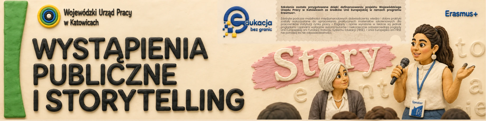

Edukacja bez granic
nowe kompetencje i umiejętności
Start
Nasze szkolenia
Zapisy na szkolenia
Kursy online
Kontakt
Kurs online: Media Literacy, Fake News i Krytyczne Myślenie
Otwórz kurs online
Kurs online: Wystąpienia publiczne i storytelling

Wkrótce